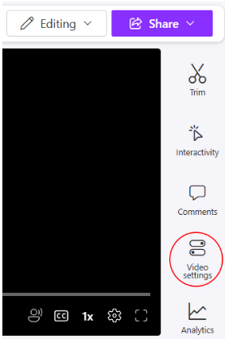
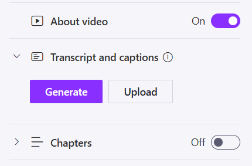
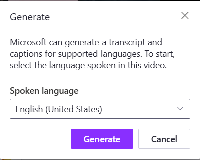
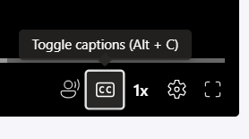

Clipchamp provides the tools to automatically generate closed captions for your videos, allowing you to make any video more accessible with just a few clicks.
Open a video in Clipchamp's player page.
If you have edited the video with the Clipchamp editor, you must first Export the video before you can view it in the player page.
Note: Closed captions can only be generated from Clipchamp's player page. Any captions generated in the Clipchamp editor will be displayed as open captions (see:
From the right sidebar, click Video Settings. A slide menu appears.

Click Transcript and captions. A dropdown menu appears.
Click Generate. A pop-up window appears.

Select the Spoken language used in the video from the dropdown list, then click Generate. It may take a few minutes for the captions to generate.

Once the captions have been generated, viewers can toggle them on and off with the Toggle captions button in the bottom right corner of the video player.
